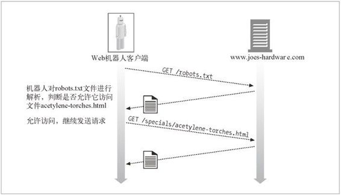

9.4 拒绝机器人访问
机器人社团能够理解机器人访问 Web 站点时可能引发的问题。1994 年，人们提出了一项简单的自愿约束技术，可以将机器人阻挡在不适合它的地方之外，并为网站管理员提供了一种能够更好地控制机器人行为的机制。这个标准被称为“拒绝机器人访问标准”，但通常只是根据存储访问控制信息的文件而将其称为 robots.txt。
robots.txt 的思想很简单。所有 Web 服务器都可以在服务器的文档根目录中提供一个可选的、名为 robots.txt 的文件。这个文件包含的信息说明了机器人可以访问服务器的哪些部分。如果机器人遵循这个自愿约束标准，它会在访问那个站点的所有其他资源之前，从 Web 站点请求 robots.txt 文件。例如，图 9-6 中的机器人想要从 Joe 的五金商店下载 http://www.joes-hardware.com/specials/acetylene-torches.html。但在机器人去请求这个页面之前，要先去查看 robots.txt 文件，看看它是否有获取这个页面的权限。在这个例子中，robots.txt 文件并没有拦截机器人，因此机器人获取了这个页面。

图 9-6 在爬行目标文件之前，先获取 robots.txt，验证是否可以进行访问
9.4.1 拒绝机器人访问标准
拒绝机器人访问标准是一个临时标准。编写本书的时候还没有官方标准机构承认这个标准，不同的厂商实现了这个标准的不同子集。但是，具备一些对机器人访问 Web 站点的管理能力，即使并不完美，也总比一点儿都没有要好，而且大部分主要的生产厂商和搜索引擎爬虫都支持这个拒绝访问标准。
尽管没有很好地定义版本的名称，但拒绝机器人访问标准是有三个版本的。我们采用了表 9-2 列出的版本编号。
表9-2 拒绝机器人访问标准的版本
| 版 本 | 标题及描述 | 日 期 |
|---|---|---|
| 0.0 | 拒绝机器人标准——Martijn Koster 提出的带有Disallow （不允许）指令的原始robots.txt 机制 | 1994 年 6 月 |
| 1.0 | 控制Web 机器人的方法——Martijn Koster 提供了额外支持Allow （允许）的IETF 草案 | 1996 年 11 月 |
| 2.0 | 拒绝机器人访问的扩展标准——Sean Conner 提出的扩展标准，包括了正则表达式和定时信息；没有得到广泛的支持 | 1996 年 11 月 |
现在大多数机器人采用的都是标准 v0.0 或 v1.0。版本 v2.0 要复杂得多，没有得到广泛的应用。可能永远也不会得到广泛应用。这里我们重点介绍 v1.0 标准，因为它的应用很广泛，而且与 v0.0 完全兼容。
9.4.2 Web站点和robots.txt文件
如果一个 Web 站点有 robots.txt 文件，那么在访问这个 Web 站点上的任意 URL 之前，机器人都必须获取它并对其进行处理。1 由主机名和端口号定义的整个 Web 站点上仅有一个 robots.txt 资源。如果这个站点是虚拟主机，每个虚拟的 docroot 都可以有一个不同的 robots.txt 文件，像所有其他文件一样。
1 尽管我们说的是 robots.txt 文件，但 robots.txt 资源并不一定要严格地位于文件系统中。比如，可以由一个网关应用程序动态地生成这个 robots.txt 资源。
通常不能在 Web 站点上单独的子目录中安装“本地”robots.txt 文件。网管要负责创建一个聚合型 robots.txt 文件，用以描述 Web 站点上所有内容的拒绝访问规则。
获取robots.txt
机器人会用 HTTP 的 GET 方法来获取 robots.txt 资源，就像获取 Web 服务器上所有其他资源一样。如果有 robots.txt 文件的话，服务器会将其放在一个 text/plain 主体中返回。如果服务器以 404 Not Found HTTP 状态码进行响应，机器人就可以认为这个服务器上没有机器人访问限制，它可以请求任意的文件。
机器人应该在 From 首部和 User-Agent 首部中传输标识信息，以帮助站点管理者对机器人的访问进行跟踪，并在站点管理者要查询，或投诉的机器人事件中提供一些联系信息。下面是一个来自商业 Web 机器人的 HTTP 爬虫请求实例：
GET /robots.txt HTTP/1.0
Host: www.joes-hardware.com
User-Agent: Slurp/2.0
Date: Wed Oct 3 20:22:48 EST 2001
响应码
很多 Web 站点都没有 robots.txt 资源，但机器人并不知道这一点。它必须尝试着从每个站点上获取 robots.txt 资源。机器人会根据对 robots.txt 检索的结果采取不同的行动。
如果服务器以一个成功状态（HTTP 状态码 2XX）为响应，机器人就必须对内容进行解析，并使用排斥规则从那个站点上获取内容。
如果服务器响应说明资源并不存在（HTTP 状态码 404），机器人就可以认为服务器没有激活任何排斥规则，对此站点的访问不受 robots.txt 的限制。
如果服务器响应说明有访问限制（HTTP 状态码 401 或 403），机器人就应该认为对此站点的访问是完全受限的。
如果请求尝试的结果是临时故障（HTTP 状态码 503），机器人就应该推迟对此站点的访问，直到可以获取该资源为止。
如果服务器响应说明是重定向（HTTP 状态码 3XX），机器人就应该跟着重定向，直到找到资源为止。
9.4.3 robots.txt文件的格式
robots.txt 文件采用了非常简单的，面向行的语法。robots.txt 文件中有三种类型的行：空行、注释行和规则行。规则行看起来就像 HTTP 首部（<Field>:<value>）一样，用于模式匹配。比如：
# this robots.txt file allows Slurp & Webcrawler to crawl
# the public parts of our site, but no other robots...
User-Agent: slurp
User-Agent: webcrawler
Disallow: /private
User-Agent: *
Disallow:
robots.txt 文件中的行可以从逻辑上划分成“记录”。每条记录都为一组特定的机器人描述了一组排斥规则。通过这种方式，可以为不同的机器人使用不同的排斥规则。
每条记录中都包含了一组规则行，由一个空行或文件结束符终止。记录以一个或多个 User-Agent 行开始，说明哪些机器人会受此记录的影响，后面跟着一些 Disallow 和 Allow 行，用来说明这些机器人可以访问哪些URL。2
2 出于实际应用的原因，机器人软件应该很强壮，可以灵活地使用行结束符。应该支持 CR、LF 和 CRLF。
前面的例子显示了一个 robots.txt 文件，这个文件允许机器人 Slurp 和 Webcrawler 访问除了 private 子目录下那些文件之外所有的文件。这个文件还会阻止所有其他机器人访问那个站点上的任何内容。
我们来看看 User-Agent、Disallow 和 Allow 行。
User-Agent 行
每个机器人记录都以一个或多个下列形式的 User-Agent 行开始：
User-Agent: <robot-name>
或
User-Agent: *
在机器人 HTTP GET 请求的 User-Agent 首部中发送（由机器人实现者选择的）机器人名。
机器人处理 robots.txt 文件时，它所遵循的记录必须符合下列规则之一：
第一个 <robot-name> 是机器人名的大小写无关的子字符串；
第一个 <robot-name> 为“*”。
如果机器人无法找到与其名字相匹配的 User-Agent 行，而且也无法找到通配的 User-Agent:* 行，就是没有记录与之匹配，访问不受限。
由于机器人名是与大小写无关的子字符串进行匹配，所以要小心不要匹配错了。比如，User-Agent:bot 就与名为 Bot、Robot、Bottom-Feeder、Spambot 和 Dont-Bother-Me 的所有机器人相匹配。
Disallow 和 Allow 行
Disallow 和 Allow 行紧跟在机器人排斥记录的 User-Agent 行之后。用来说明显式禁止或显式允许特定机器人使用哪些 URL 路径。
机器人必须将期望访问的 URL 按序与排斥记录中所有的 Disallow 和 Allow 规则进行匹配。使用找到的第一个匹配项。如果没有找到匹配项，就说明允许使用这个 URL。3
3 总是应该允许访问 robots.txt 的 URL，它一定不能出现在 Allow/Disallow 规则中。
要使 Allow/Disallow 行与一个 URL 相匹配，规则路径就必须是 URL 路径大小写相关的前缀。例如，Disallow: /tmp 就和下面所有的 URL 相匹配：
http://www.joes-hardware.com/tmp
http://www.joes-hardware.com/tmp/
http://www.joes-hardware.com/tmp/pliers.html
http://www.joes-hardware.com/tmpspc/stuff.txt
Disallow/Allow 前缀匹配
下面是 Disallow/Allow 前缀匹配的一些细节。
Disallow 和 Allow 规则要求大小写相关的前缀匹配。（与 User-Agent 行不同）这里的星号没什么特殊的含义，但空字符串可以起到通配符的效果。
在进行比较之前，要将规则路径或 URL 路径中所有“被转义”的字符（%XX）都反转为字节（除了正斜杠 %2F 之外，它必须严格匹配）。
如果规则路径为空字符串，就与所有内容都匹配。
表 9-3 列出了几个在规则路径和 URL 路径间进行匹配的例子。
表9-3 robots.txt路径匹配示例
| 规则路径 | URL路径 | 匹配吗？ | 注 释 |
| /tmp | /tmp | √ | 规则路径 == URL 路径 |
| /tmp | /tmpfile.html | √ | 规则路径是URL 路径的前缀 |
| /tmp | /tmp/a.html | √ | 规则路径是URL 路径的前缀 |
| /tmp/ | /tmp | × | /tmp/ 不是/tmp 的前缀 |
| README.TXT | √ | 空的规则路径匹配于所有的路径 | |
| /~fred/hi.html | /%7Efred/hi.html | √ | 将%7E 与~ 同等对待 |
| /%7Efred/hi.html | /~fred/hi.html | √ | 将%7E 与~ 同等对待 |
| /%7efred/hi.html | /%7Efred/hi.html | √ | 转义符是大小写无关的 |
| /~fred/hi.html | ~fred%2Fhi.html | × | %2F 是一个斜杠，但斜杠是种特殊情况，必须完全匹配 |
前缀匹配通常都能很好地工作，但有几种情况下它的表达力却不够强。如果你希望无论使用什么路径前缀，都不允许爬行一些特别的子目录，那 robots.txt 是无能为力的。比如，你可能希望禁止在用于 RCS 版本控制的子目录中爬行。除了将到达各 RCS 子目录的每条路径都分别枚举出来之外，1.0 版的 robots.txt 方案无法提供此功能。
9.4.4 其他有关robots.txt的知识
解析 robots.txt 文件时还需遵循其他一些规则。
随着规范的发展，robots.txt 文件中可能会包含除了 User-Agent、Disallow 和 Allow 之外的其他字段。机器人应该将所有它不理解的字段都忽略掉。
为了实现后向兼容，不能在中间断行。
注释可以出现在文件的任何地方；注释包括可选的空格，以及后面的注释符（#）、注释符后面的注释，直到行结束符为止。
0.0 版的拒绝机器人访问标准并不支持 Allow 行。有些机器人只实现了 0.0 版的规范，因此会忽略 Allow 行。在这种情况下，机器人的行为会比较保守，有些允许访问的 URL 它也不去获取。
9.4.5 缓存和robots.txt的过期
如果一个机器人在每次访问文件之前都要重新获取 robots.txt 文件，Web 服务器上的负载就会加倍，机器人的效率也会降低。机器人使用的替代方法是，它会周期性地获取 robots.txt 文件，并将得到的文件缓存起来。机器人会使用这个 robots.txt 文件的缓存副本，直到其过期为止。原始服务器和机器人都会使用标准的 HTTP 存控制机制来控制 robots.txt 文件的缓存。机器人应该留意 HTTP 响应中的 Cache-Control 和 Expires 首部。4
4 更多有关缓存指令处理方面的内容请参见 7.8 节。
现在很多产品级爬虫都不是 HTTP/1.1 的客户端；网管应该意识到这些爬虫不一定能够理解那些为 robots.txt 资源提供的缓存指令。
如果没有提供 Cache-Control 指令，规范草案允许将其缓存 7 天。但实际上，这个时间通常太长了。不了解 robots.txt 文件的 Web 服务器管理员通常会在响应机器人的访问时创建一个新的文件，但如果将缺乏信息的 robots.txt 文件缓存一周，新创建的 robots.txt 文件就没什么效果了，站点管理员会责怪机器人管理员没有遵守拒绝机器人访问标准。5
5 有几种大型的 Web 爬虫，如果它们在 Web 上勤奋爬行的话，每天都会重新获取 robots.txt。
9.4.6 拒绝机器人访问的Perl代码
有几个公共的 Perl 库可以用来与 robots.txt 文件进行交互。CPAN 公共 Perl 文档中的 WWW::RobotsRules 模块就是一个这样的例子。
将已解析的 robots.txt 文件保存在 WWW::RobotRules 对象中，这个对象提供了一些方法，可以用于查看是否禁止对某指定 URL 进行访问。同一个 WWW::RobotRules 可以用于解析多个 robots.txt 文件。
下面是 WWW::RobotRules API 的一些主要方法。
创建 RobotRules 对象
$rules = WWW::RobotRules->new($robot_name);
装载 robots.txt 文件
$rules->parse($url, $content, $fresh_until);
查看站点 URL 是否可获取
$can_fetch = $rules->allowed($url);
下面这个短小的 Perl 程序说明了 WWW::RobotRules 的用法：
require WWW::RobotRules;
# Create the RobotRules object, naming the robot "SuperRobot"
my $robotsrules = new WWW::RobotRules 'SuperRobot/1.0';
use LWP::Simple qw(get);
# Get and parse the robots.txt file for Joe's Hardware, accumulating
# the rules
$url = "http://www.joes-hardware.com/robots.txt";
my $robots_txt = get $url;
$robotsrules->parse($url, $robots_txt);
# Get and parse the robots.txt file for Mary's Antiques, accumulating
# the rules
$url = "http://www.mary's antiques.com/robots.txt";
my $robots_txt = get $url;
$robotsrules->parse($url, $robots_txt);
# Now RobotRules contains the set of robot exclusion rules for several
# different sites. It keeps them all separate. Now we can use RobotRules
# to test if a robot is allowed to access various URLs.
if ($robotsrules->allowed($some_target_url))
{
$c = get $url;
...
}
下面是 www.marys-antiques.com 的假想 robots.txt 文件：
#####################################################################
# This is the robots.txt file for Mary's Antiques web site
#####################################################################
# Keep Suzy's robot out of all the dynamic URLs because it doesn't
# understand them, and out of all the private data, except for the
# small section Mary has reserved on the site for Suzy.
User-Agent: Suzy-Spider
Disallow: /dynamic
Allow: /private/suzy-stuff
Disallow: /private
# The Furniture-Finder robot was specially designed to understand
# Mary's antique store's furniture inventory program, so let it
# crawl that resource, but keep it out of all the other dynamic
# resources and out of all the private data.
User-Agent: Furniture-Finder
Allow: /dynamic/check-inventory
Disallow: /dynamic
Disallow: /private
# Keep everyone else out of the dynamic gateways and private data.
User-Agent: *
Disallow: /dynamic
Disallow: /private
这个 robots.txt 文件中包含了一条机器人 SuzySpider 的记录，一条机器人 FurnitureFinder 的记录，以及一条用于所有其他机器人的默认记录。每条记录都对不同的机器人使用了一组不同的访问策略。
SuzySpider 的排斥记录不允许机器人爬行以 /dynamic 开头的商店库存网关 URL，以及在为 Suzy 保留的区域之外的其他私有用户数据。
FurnitureFinder 机器人的记录允许机器人爬行家具库存网关 URL。这个机器人可能能够理解 Mary 的网关格式和规则。
其他机器人都不能访问所有的动态和私有 Web 页面，但它们可以爬行其余的 URL。
表 9-4 列出了几个机器人实例，这几个机器人具有不同的 Mary 古董网站访问权限。
表9-4 Mary古董网站的机器人访问权限
| URL | SuzySpider | FurnitureFinder | NosyBot |
|---|---|---|---|
| http://www.marys-antiques.com/ | √ | √ | √ |
| http://www.marys-antiques.com/index.html | √ | √ | √ |
| http://www.marys-antiques.com/private/payroll.xls | × | × | × |
| http://www.marys-antiques.com/private/suzy-stuff/taxes.txt | √ | × | × |
| http://www.marys-antiques.com/dynamic/buystuff?id=3546 | × | × | × |
| http://www.marys-antiques.com/dynamic/checkinventory?kitchen | × | √ | × |
9.4.7 HTML的robot-control元标签
robots.txt 文件允许站点管理员将机器人排除在 Web 站点的部分或全部内容之外。robots.txt 文件的一个缺点就是它是 Web 站点管理员，而不是各部分内容的作者所有的。
HTML 页面的作者有一种更直接的方式可以限制机器人访问那些独立的页面。他们可以直接在 HMTL 文档中添加 robot-control 标签。遵循 robot-control HTML 标签规则的机器人仍然可以获取文档，但如果其中有机器人排斥标签，它们就会忽略这些文档。比如，因特网搜索引擎机器人就不会在其搜索索引中包含这个目录了。和 robots.txt 标准一样，鼓励但并不强制使用这个标签。
机器人排斥标签是以如下形式，通过 HTML 的 META 标签来实现的：
<META NAME="ROBOTS" CONTENT=directive-list>
机器人的META指令
机器人 META 指令有几种不同的类型，而且随着时间的推移，以及搜索引擎及机器人对其行为和特性集的扩展，很可能还会添加一些新的指令。最常用的两个机器人 META 指令如下所示。
NOINDEX
告诉机器人不要对页面的内容进行处理，忽略文档（也就是说，不要在任何索引或数据库中包含此内容）。
<META NAME="ROBOTS" CONTENT="NOINDEX">
NOFOLLOW
告诉机器人不要爬行这个页面的任何外连链接。
<META NAME="ROBOTS" CONTENT="NOFOLLOW">
除了 NOINDEX 和 NOFOLLOW 之外，还有相对应的 INDEX 指令、FOLLOW 指令、 NOARCHIVE 指令以及 ALL 和 NONE 指令。下面对这些机器人 META 标签指令进行了总结。
INDEX
告诉机器人它可以对页面的内容进行索引。
FOLLOW
告诉机器人它可以爬行页面上的任何外连链接。
NOARCHIVE
告诉机器人不应该缓存这个页面的本地副本。6
6 那些运行 Google 搜索引擎的人引入这个 META 标签，是为了向网管提供一种不允许 Google 提供其内容缓存页面的手段。此标签还可以与 META NAME="googlebot" 一起使用。
ALL
等价于 INDEX、FOLLOW。
NONE
等价于 NOINDEX、NOFOLLOW。
与所有 HTML 的 META 标签类似，机器人 META 标签必须出现在 HTML 页面的 HEAD 区域中：
<html>
<head>
<meta name="robots" content="noindex,nofollow">
<title>...</title>
</head>
<body>
...
</body>
</html>
注意，标签的名称 robots 和内容都是大小写无关的。
很显然，不能发出一些会产生冲突或重复的指令，比如：
<meta name="robots" content="INDEX,NOINDEX,NOFOLLOW,FOLLOW,FOLLOW">
这种指令的行为很可能是未定义的，肯定会随机器人实现的不同而有所不同。
搜索引擎的META标签
我们刚刚讨论了机器人的 META 标签，可以用来控制 Web 机器人的爬行和索引行为。所有的机器人 META 标签中都包含了 name="robots" 属性。
还有很多其他类型的 META 标签可用，包括表 9-5 所示的各种标签。对内容索引型搜索引擎机器人来说，DESCRIPTION 和 KEYWORDS META 标签都非常有用。
表9-5 其他META标签指令
| name= | content= | 描 述 |
| DESCRIPTION | < 文本> | 允许作者为 Web 页面定义一个短小的文本摘要。很多搜索引擎都会查看 META DESCRIPTION 标签，允许页面作者指定一些短小的摘要来描述其 Web 页面 <meta name="description" content="Welcome to Mary's Antiques Web site"> |
| KEYWORDS | < 逗号列表> | 关联一个由逗号分隔的 Web 页面描述词列表，为关键字搜索提供帮助 <meta name="keywords" content="antiques,mary,furniture,restoration"> |
| REVISIT-AFTER7 | < 天数> | 告诉机器人或搜索引擎应该在指定天数之后重访页面，估计那时候页面可能会发生变化 <meta name="revisit-after" content="10 days"> |
7 这个指令很可能没有得到广泛的支持。